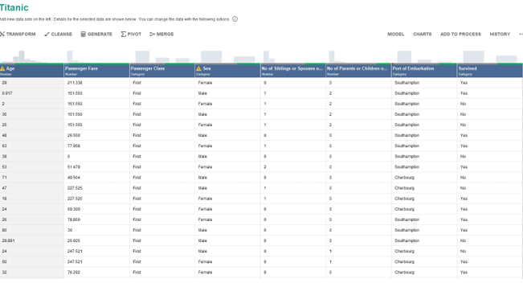
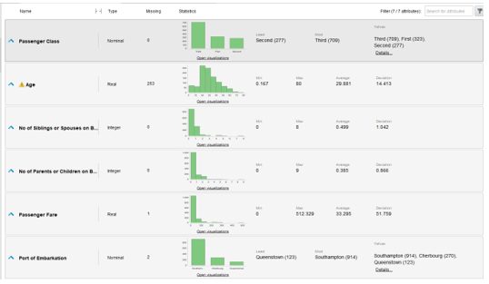
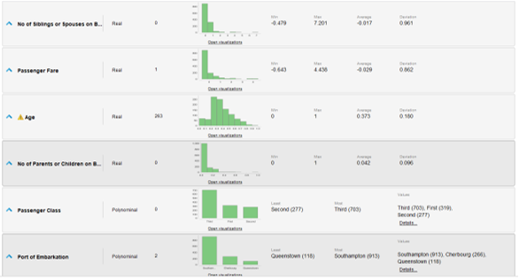
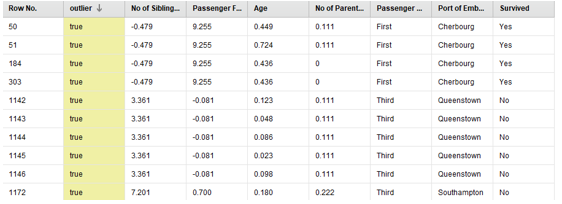
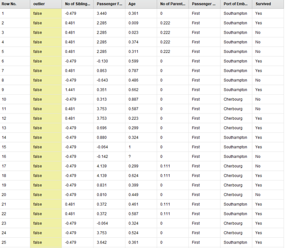

PD1
Data Treatment Findings
Exercise 1
Imputation of Missing Values:
The average imputation method was used for missing values in numerical columns such as Age and Passenger Fare, allowing for reasonable values to be obtained for incomplete records. In categorical columns such as Embarked (port of boarding), missing values were imputed with the most frequent value (Mode), which in this case is Southampton. For the columns SibSp and Parch, missing values were imputed with 0 as many passengers traveled alone.
Application of Filters:
Filters were applied to maintain only the examples with:
- Age between 0 and 80 years, representing a reasonable range of ages.
- Passenger fares less than or equal to 500, eliminating possible outliers in the highest fares.
- Number of siblings/spouses less than or equal to 8 and number of parents/children less than or equal to 9, values that correspond to the real maximums in the dataset.
These filters allowed for reducing the dataset by eliminating possible extreme values (outliers).
General Results:
The final dataset contains examples with a more reasonable age range and fares that do not include extreme outliers. The filtering of the family columns on board allowed us to observe that most passengers traveled without siblings/spouses or with few relatives. There are fewer columns, only the necessary and most relevant ones for survival analysis.
Normalization and Outlier Detection
Normalization of Attributes:
Normalization was performed on the selected numerical attributes (Age, Passenger Fare, No of Parents or Children on Board, and No of Siblings or Spouses on Board).
Methods of normalization used:
- Z-Score: To standardize the Age and No of Siblings or Spouses on Board attributes with a mean of 0 and standard deviation of 1, facilitating the detection of extreme values.
- Range (0 to 1): Applied to the No of Parents or Children on Board and Passenger Fare attributes, scaling their values to a common range between 0 and 1.
Impact of normalization: Normalization allows numerical data to have a comparable scale, which is important to ensure balanced analysis in machine learning algorithms that are sensitive to scale.
Outlier Detection:
The outlier detection technique based on distance was applied using the Euclidean distance function and considering the 5 nearest neighbors. The process was configured to detect 10 outliers. These examples were filtered and excluded from the final dataset.
Results of outlier detection: No examples in the final set were labeled as outliers (all have outlier = false), indicating that previously detected outliers were eliminated.
Graph without Normalization
Graph with Normalization
Outliers found
The first 25 values excluding the 10 outliers
Exercise 2
Problem Description:
The "Wine" dataset contains information about various chemical properties of wines grown in a specific region of Italy derived from three different cultivars. The objective of this analysis is to classify the wines into one of these three classes using the 13 chemical attributes present in the dataset.
Attributes of the Dataset:
- Alcohol: Percentage of alcohol in the wine.
- Malic Acid: Concentration of malic acid in the wine.
- Ash: Amount of ash produced after the combustion of the components of the wine.
- Alcalinity of Ash: Measure of the alkalinity of the ashes.
- Magnesium: Magnesium content, a mineral that can influence the structure of the wine.
- Total Phenols: Total amount of phenols that affect both the color and flavor of the wine.
- Flavonoids: Subgroup of phenols that also influence the color and flavor of the wine.
- Nonflavonoid Phenols: Phenols that do not belong to the flavonoid group.
- Proanthocyanins: Compounds that contribute to the astringency or dryness of the wine.
- Color Intensity: Intensity of the color of the wine.
- Hue: Hue of the wine.
- OD280/OD315 of Diluted Wines: A measure that assesses the quality of the wine based on phenol content.
- Proline: Content of proline, an amino acid associated with the aroma and flavor of the wine.
Basic Attribute Statistics:
- Attribute 1 (Wine Class):
- Type: Integer.
- Mean: 1.944.
- Standard Deviation: 0.774.
- Distribution: There are three wine classes (1, 2, and 3) with a fairly balanced distribution among them.
- Alcohol:
- Type: Real.
- Range: [11.03, 14.83].
- Mean: 12.994.
- Standard Deviation: 0.809.
- Distribution: Alcohol values are mostly concentrated between 12 and 14 degrees.
- Malic Acid:
- Type: Real.
- Range: [0.74, 5.80].
- Mean: 2.340.
- Standard Deviation: 1.119.
- Distribution: Malic acid values show higher concentration at low values (between 1 and 2), with some values more dispersed towards 5.8.
- Ash:
- Type: Real.
- Range: [1.36, 3.23].
- Mean: 2.366.
- Standard Deviation: 0.275.
- Distribution: Most wines have ash values around 2.3, with little variation.
- Alkalinity of Ash:
- Type: Real.
- Range: [10.60, 30.0].
- Mean: 19.517.
- Standard Deviation: 3.336.
- Distribution: There is some dispersion in the alkalinity of ash, with most wines between 15 and 25.
- Magnesium:
- Type: Integer.
- Range: [70, 162].
- Mean: 99.588.
- Standard Deviation: 14.174.
- Distribution: Magnesium content is mostly concentrated around 100.
- Total Phenols:
- Type: Real.
- Range: [0.98, 3.88].
- Mean: 2.292.
- Standard Deviation: 0.626.
- Distribution: Most wines have total phenol values between 2 and 3.
- Flavonoids:
- Type: Real.
- Range: [0.34, 5.08].
- Mean: 2.023.
- Standard Deviation: 0.999.
- Distribution: Flavonoid values are more concentrated between 1.5 and 3, with some values dispersed up to 5.08.
- Non-flavonoid Phenols:
- Type: Real.
- Range: [0.13, 0.66].
- Mean: 0.362.
- Standard Deviation: 0.125.
- Distribution: Non-flavonoid phenol values are mostly concentrated between 0.2 and 0.4.
- Proanthocyanins:
- Type: Real.
- Range: [0.41, 3.58].
- Mean: 1.587.
- Standard Deviation: 0.572.
- Distribution: Concentration of values around 1.5 to 2.5.
- Color Intensity:
- Type: Real.
- Range: [1.28, 13.0].
- Mean: 5.055.
- Standard Deviation: 2.324.
- Distribution: Wide dispersion with a concentration around 4 to 6.
- Hue:
- Type: Real.
- Range: [0.48, 1.71].
- Mean: 0.957.
- Standard Deviation: 0.229.
- Distribution: Hue values concentrated between 0.8 and 1.2.
- OD280/OD315:
- Type: Real.
- Range: [1.27, 4.00].
- Mean: 2.604.
- Standard Deviation: 0.705.
- Distribution: The OD280/OD315 ratio has a distribution mostly between 2.0 and 3.0.
- Proline:
- Type: Integer.
- Range: [278, 1680].
- Mean: 745.096.
- Standard Deviation: 314.884.
- Distribution: Wide dispersion of values, with an average around 700 to 800.